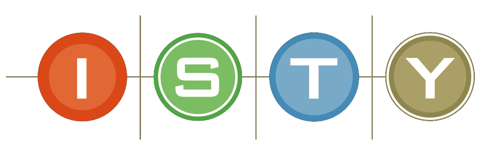
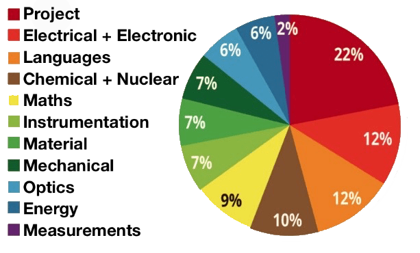

Master’s engineering degree, specializing in Mechatronics
Scientific Education
> Mathematics: Statistics and Probability, Algebra and Matrix Computation
> Physics: Electromagnetism, Thermodynamics
Engineering Sciences
> Automatic: Signal Processing, Continuous Automatic
> Electronics and Electrical Engineering
> Computer Engineering
> Materials
Sciences and Techniques for Mechatronics
> Mechanical Engineering
> Industrial Computing and CEM
> Robotics
> Software Tools: Matlab, Supervision Tool: Labview
> Mechanical CAD: CATIA, ADAMS
> Electronic CAD: Protel
Human and Managerial Sciences
> Quality Management
> Study of the Organization and Management of the Company
> Human Resources Management
> Languages: English
Check out the ISTY website here

Applied Physics, two-year university degree in technology (DUT)
> Knows how to set up and configure a measurement chain, from the choice of the sensor to the display of data on a computer, including the conditioning, acquisition and processing of the signal sent by the sensor.
> Knows how to adopt a metrological approach: measurement protocol, uncertainty calculations, verification of the accuracy and reliability of a fleet of measurement instruments, application of the standards in force.
> Knows how to interpret the result of a measurement or measurement campaign in all areas of the physical sciences (mechanical, optical, thermal, materials, acoustics, chemistry, etc.).
> Knows how to write test reports and communicate within the company.

Check out the IUT website here


CS50x
Introduction to the intellectual enterprises of computer science and the art of programming.
This course teaches students how to think algorithmically and solve problems efficiently.
Topics include abstraction, algorithms, data structures, encapsulation, resource management, security, and software engineering.
Languages include C, Python, and SQL plus students’ choice of: HTML, CSS, and JavaScript (for web development); Java or Swift (for mobile app development); or Lua (for game development).
Problem sets inspired by the arts, humanities, social sciences, and sciences. Course culminates in a final project.
Check out the CS50x website here